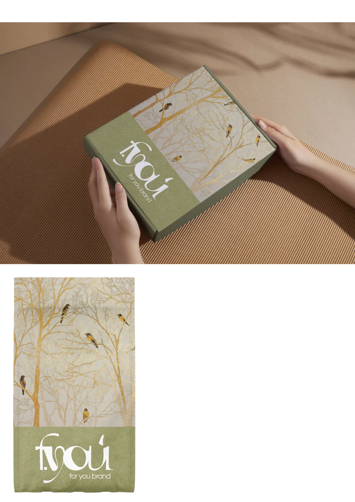
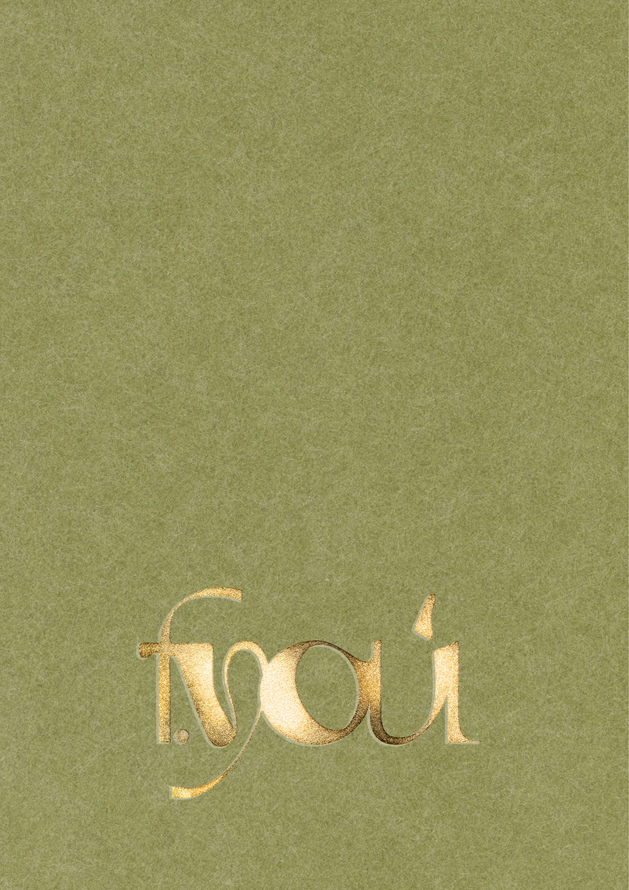
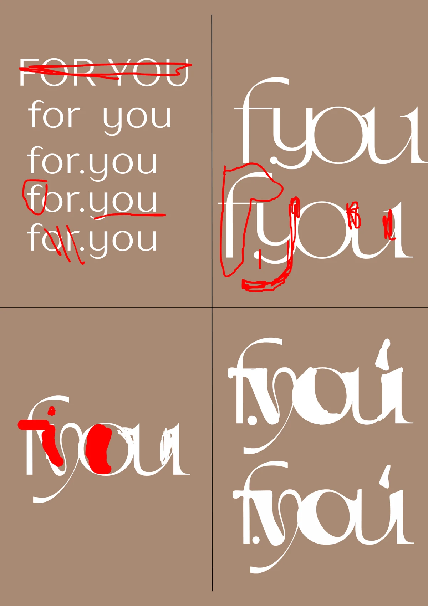
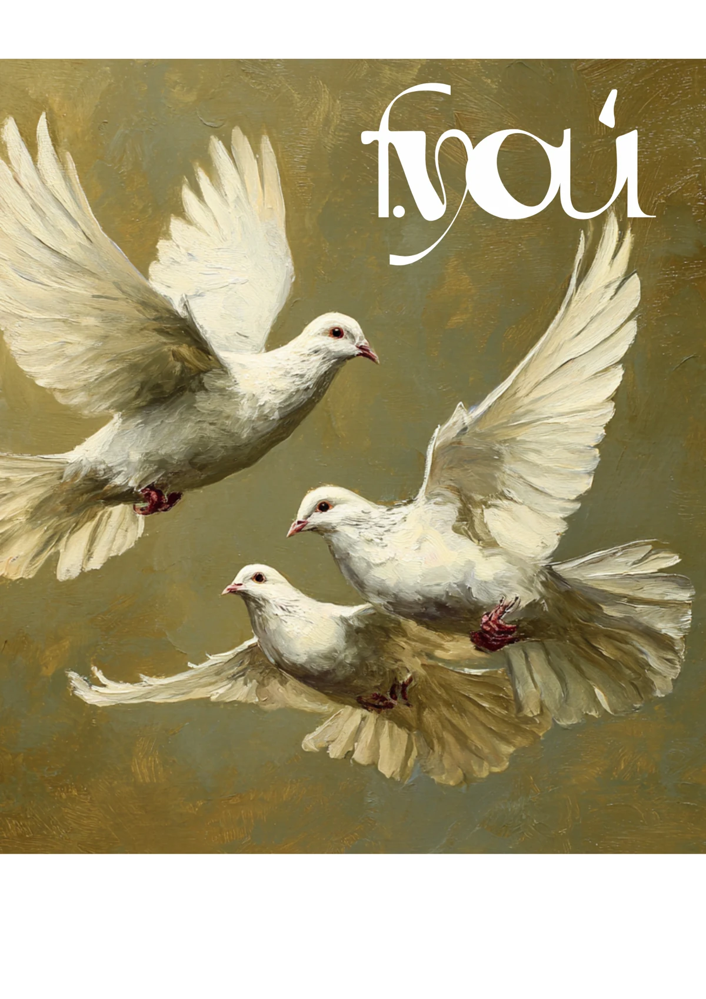
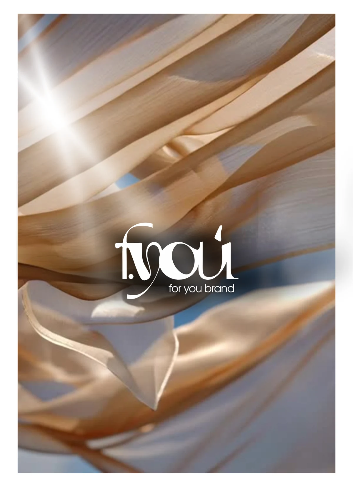
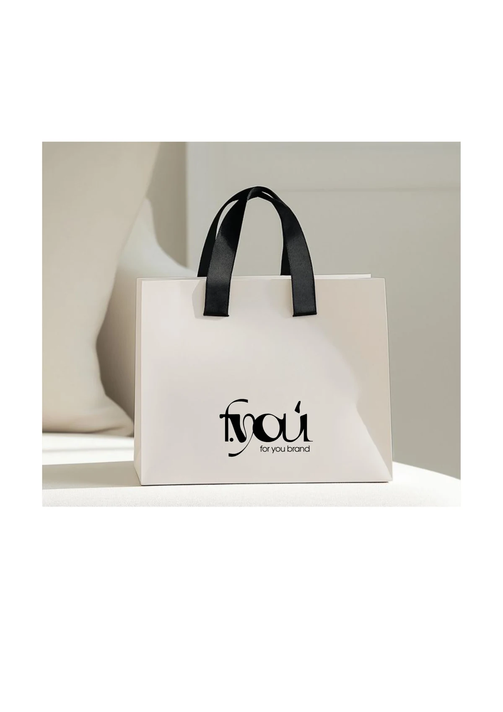
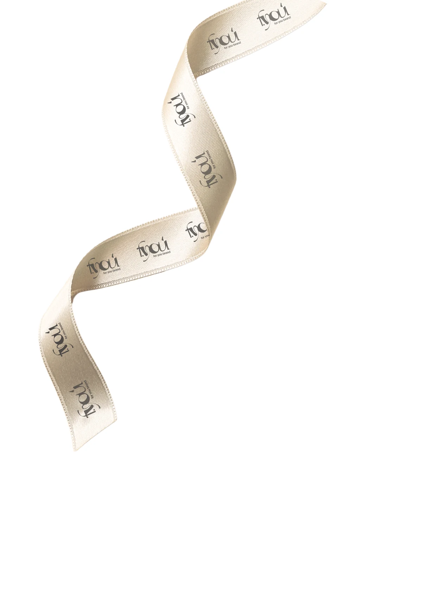

FOR YOU.
В деталях бренда.
Визуальная айдентика бренда одежды: от авторского логотипа и графики с птицами до упаковки и оформления соцсетей.




Один образ.
От знака до публикации.
FOR YOU — бренд одежды, для которого я создала логотип и визуальную айдентику. Работа объединила фирменные фоны, композиции с птицами, оформление носителей и материалы для соцсетей.
В основе визуального языка — молочные оттенки, оливковый цвет, золотистые детали и мягкие складки ткани. Эти элементы связывают упаковку, графику и digital-материалы в одну историю.
Пластика букв.
Узнаваемый характер.
Авторское начертание и подпись for you brand. Чёрная, светлая и золотистая версии для разных фонов и носителей.
Посмотреть поиск формы логотипа


Поиск начертания: варианты соединения букв, пропорции и работа над характером знака. Это рабочий этап разработки, а выше показаны версии для использования.
Птицы, свет
и прикосновение ткани.
Золотистые ветви с птицами, летящие голуби и фактурные фоны — самостоятельные элементы визуальной айдентики.





Фон как часть
айдентики.
Ткань поддерживает связь с одеждой: мягкий свет, складки и плавное движение создают фон для логотипа и текста. Этот приём продолжается в материалах для соцсетей.
Бренд в руках.
В каждой детали.
Логотип и фирменная графика переходят на упаковку: от лаконичного пакета до ленты с повторяющимся знаком.




В этом разделе представлены дизайн и визуализации носителей.
Тот же характер.
В ленте бренда.
Оформление соцсетей продолжает айдентику: графика с птицами, фактурные фоны, работа с фотографией и типографикой.